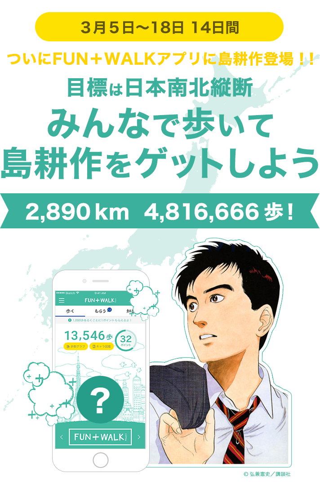
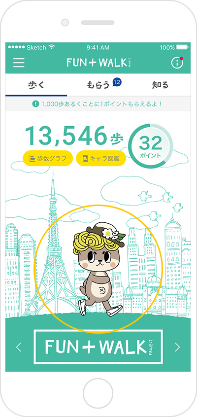
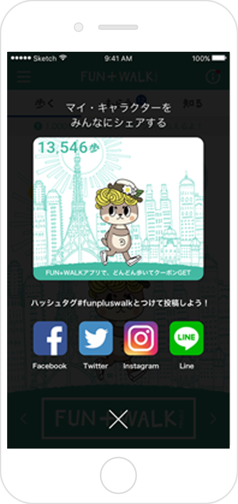

3月7日現在
4,446,481歩
達成率 65%
FUN+WALK WEEKにもっと歩こう！楽しみながら歩こう！
FUN＋WALKアプリをダウンロードして、歩いて、シェアして、島耕作をゲット！
期間中にみんなが投稿した歩数の合計から距離を算出。
その距離が、日本縦断（2,890ｋｍ）に達したら、
FUN+WALKアプリに島耕作が登場！！
期間限定の目玉キャラをみんなでゲットしよう！！
※達成された場合、島耕作キャラは４月中旬以降に登場予定です。
FUN＋WALKアプリをダウンロードして、歩いて、シェアして、島耕作をゲット！
期間中にみんなが投稿した歩数の合計から距離を算出。
その距離が、日本縦断（2,890ｋｍ）に達したら、
FUN+WALKアプリに島耕作が登場！！
期間限定の目玉キャラをみんなでゲットしよう！！
※達成された場合、島耕作キャラは４月中旬以降に登場予定です。
-
ステップ 1”歩く”が楽しくなる
「FUN+WALKアプリ」を
ダウンロードしよう！Androidの方
 iPhoneの方
iPhoneの方

-
ステップ 2好きなキャラクターを
選んで、どんどん歩こう。キャラクターをタップするとシェアできる -
ステップ 3歩数とキャラクター画面を
「＃funpluswalk」を
つけて投稿しよう！※Twitterまたは、インスタで投稿してね！
※１日１回投稿
参加資格
FUN+WALKアプリをダウンロード頂ければ誰でも参加出来ます。
目標
日本縦断！！（2890ｋｍ）
※本キャンペーンにおいて、2890km、 4,446,154 歩を日本縦断と定義します。
※平均歩幅を60cmとして、投稿された歩数より距離を算出
期間
3月5日～18日 14日間